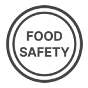
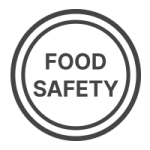

식품안전 & 품질정책
풀무원은 글로벌 식품안전기준과 품질기준을 준수하며,
지속적인 기술혁신으로 안전한 먹거리를 제공합니다.
지속적인 기술혁신으로 안전한 먹거리를 제공합니다.

식품 안전 최우선
위험 요소를사전에 차단하고 관리
지속 가능한 공급망
친환경 원료와건강한 식재료 사용 지향
지속적인 혁신
식품 안전과 품질 관리시스템을 끊임없이 혁신


식품 안전 최우선
위험 요소를지속 가능한 공급망
친환경 원료와지속적인 혁신
식품 안전과 품질 관리PRIS (Pulmuone Regulation Integrate System)
법령과 기준 대비 부적합 사항을 자동화된 방식으로 검출하는LIMS (Laboratory Information Management System)
시험·검사 등을 효율적으로 관리하는 시스템으로